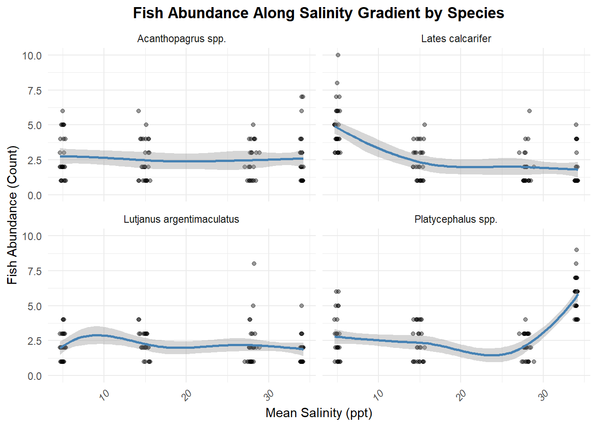
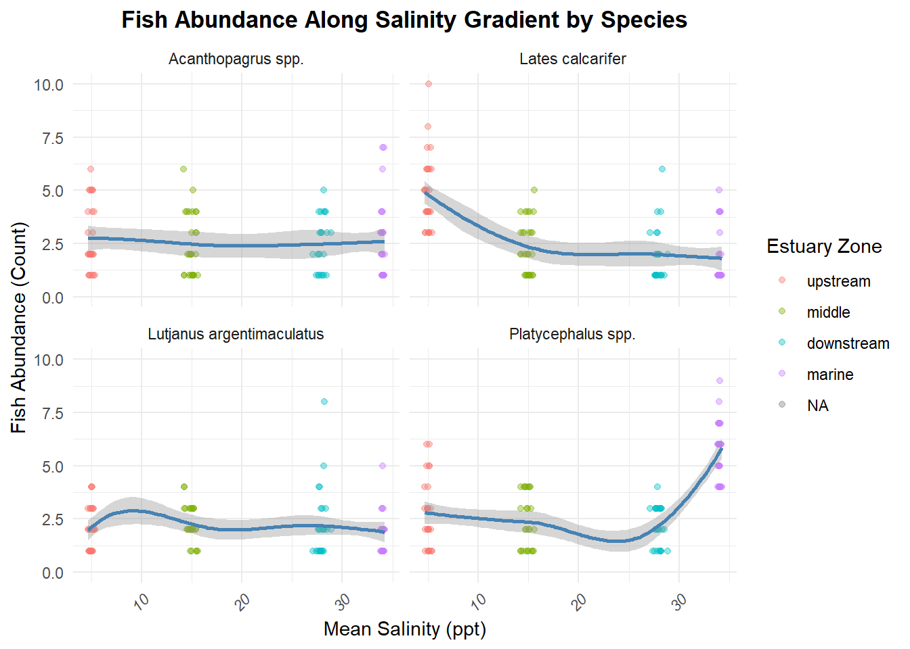
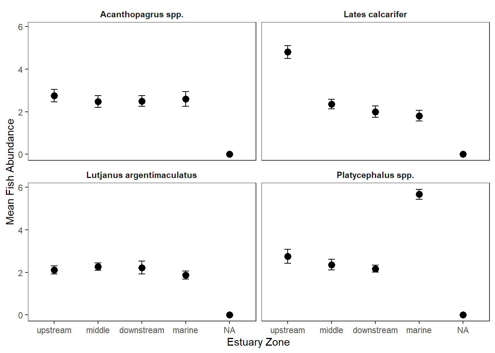
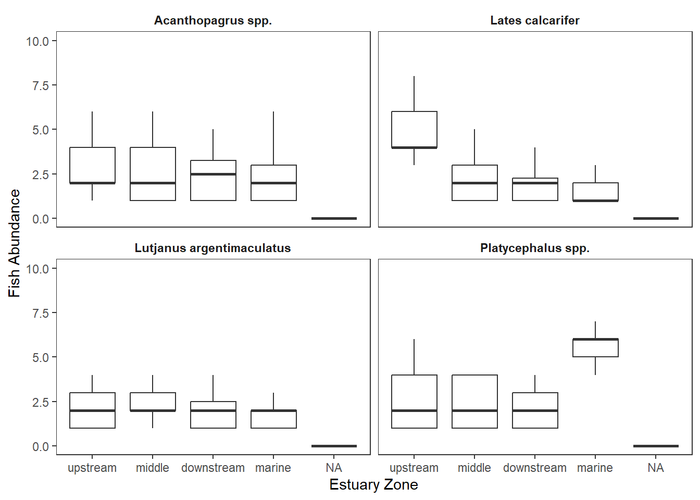
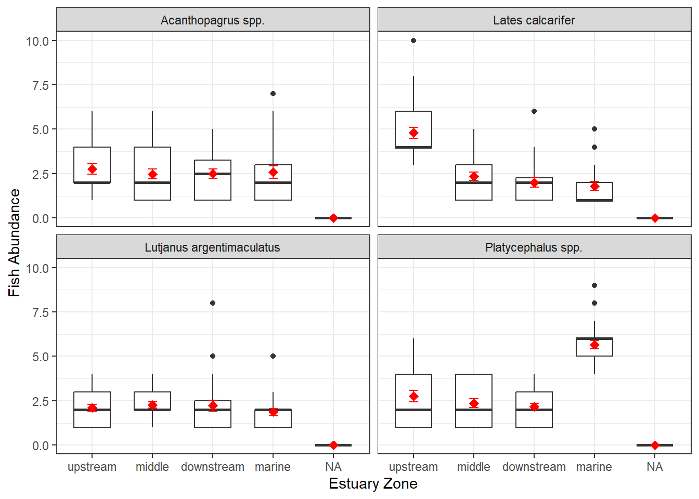
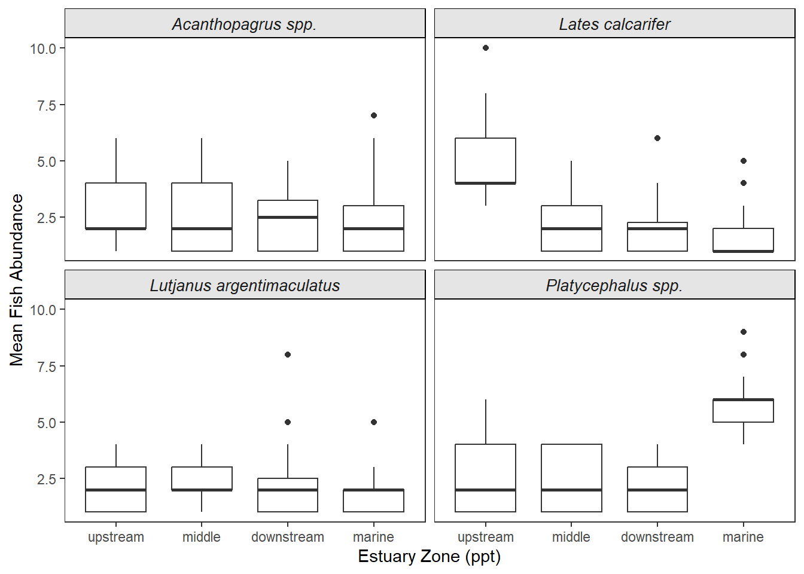

metadata <- read_csv("data/workshop2/estuary_metadata.csv")Keystone
Introduction
You have inherited a project from a former PhD student who was studying the relationship between water quality and predatory fish assemblages along the Ross River Estuary gradient. Unfortunately, their data management was entirely manual, and the files are a disaster.
They left you with four separate datasets:
- estuary_catch_log.xlsx: Handwritten field counts of fish species (using common names), spread across multiple spreadsheet tabs.
- estuary_metadata.csv: The spatial coordinates and estuary zones for each site.
- estuary_sonde_data.csv: High-frequency water quality sensor readings.
- species_dictionary.csv: A taxonomic lookup table linking local common names to their accepted scientific names.
Your mission is to write a single, reproducible R script (or .qmd) that ingests this mess, cleans it, joins it into a single master dataset, and produces a publication-ready visualisation of the estuary’s ecology.
Load files
file_path <- ("data/workshop2/estuary_catch_log.xlsx")
catch_data2 <- excel_sheets(file_path) %>%
map_dfr(~ read_excel(file_path, sheet = .x))
catch1 <- read_excel("data/workshop2/estuary_catch_log.xlsx", sheet = 1)
catch2 <- read_excel("data/workshop2/estuary_catch_log.xlsx", sheet = 2)
catch3 <- read_excel("data/workshop2/estuary_catch_log.xlsx", sheet = 3)
catch4 <- read_excel("data/workshop2/estuary_catch_log.xlsx", sheet = 4)
catch_data <- bind_rows(catch1, catch2, catch3, catch4)
sonde_data <- read_csv("data/workshop2/estuary_sonde_data.csv")
species_dict <- read_csv("data/workshop2/species_dictionary.csv")Note: We want our files to be accessible to the people we are going to share it to, so we have to make sure our file path are compatible. Since everything is in our repo anyway, our path starts from our data folder, not our project folder… So if I wanted to get the reef_cover_log.csv from our workshop1 folder which is in our data folder inside our MB5370_Module_02 folder, since our project is in MB5370_, we can start our path from data/workshop1/name of the file.
Phase 1: Ingestion and Decontamination
#Cleaning catch_data.
#We bound the 4 sheets of the catch log together using bind_rows() and stored it in catch_data (and catch_data2). We also imported the other files as separate data frames.
#Standardize site and species names in the catch_data to lowercase with underscores so they match the metadata and species dictionary.
catch_data <- catch_data %>%
mutate( #this means change x to y basically
site = str_to_lower(site) %>% str_replace_all(" ", "_"),
species = str_to_lower(species) %>% str_replace_all(" ", "_"))
#Standardize the species name to the scientific names in species_dict.
catch_data <- catch_data %>%
left_join(species_dict, by = c("species" = "common_name")) %>%
mutate(species = scientific_name) %>%
select(-scientific_name)#Cleaning metadata.
#In the metadata file, standardize the column names (lowercase with " " as "_") and rename the site_name column to "site" to match the catch_data.Then standardize the names of the sites inside the rows of the site column to match the catch_data.
metadata <- metadata %>%
rename(site = site_name) %>%
mutate(
site = str_to_lower(site) %>% str_replace_all(" ", "_"),
zone = str_to_lower(zone))#Cleaning species_dict.
#Standardize the species name inside the scientific_name column to lowercase with underscores.
species_dict <- species_dict %>%
mutate(scientific_name = str_to_lower(scientific_name) %>% str_replace_all(" ", "_"))#Cleaning sonde_data
#Standardize the site names in the sonde_data to match the catch_data and metadata. I want them to be ordered by sites (so the same site names are together) and then by date (so the same dates are together).
glimpse(sonde_data)Rows: 11,520
Columns: 5
$ site <chr> "upper_ross", "mid_ross", "lower_ross", "ross_mouth", "upp…
$ timestamp <chr> "01/05/2026 00:00", "01/05/2026 00:00", "01/05/2026 00:00"…
$ temperature <dbl> 23.71379, 24.13302, 24.23558, 24.64147, 26.06955, 24.62576…
$ salinity <dbl> 4.054812, 15.742962, 28.934938, 33.891350, 3.962750, 12.05…
$ turbidity <dbl> 6.489046, 49.216967, 48.135752, 49.811493, 25.184739, 34.8…head(sonde_data$timestamp)[1] "01/05/2026 00:00" "01/05/2026 00:00" "01/05/2026 00:00" "01/05/2026 00:00"
[5] "01/05/2026 00:15" "01/05/2026 00:15"#Cleaning timestamp
library(lubridate)
sonde_data <- sonde_data %>%
mutate(
date = dmy_hm(timestamp), #converting timestamp to date format
temperature = na_if(temperature, -999.0), #replacing -999.0 with NA
salinity = na_if(salinity, -999.0), #replacing -999.0 with NA
turbidity = na_if(turbidity, -999.0), #replacing -999.0 with NA
salinity = ifelse(salinity < 0, NA, salinity)) %>% #replacing negative salinity values with NA
select(-timestamp) %>% #removing the original timestamp column
arrange(site, date)Phase 2: The relational architecture
#Summarizing water sensor data: Creating a daily summary table that calculates the mean temperature and salinity for each site on each day. (Hint: look at the floor_date() function to group by day).
sonde_daily_summary <- sonde_data %>%
group_by(site, date = floor_date(date, unit = "day")) %>%
summarise(
mean_temperature = mean(temperature, na.rm = TRUE),
mean_salinity = mean(salinity, na.rm = TRUE),
.groups = "drop")Taxonomic translation was done during data cleaning.
#The grand join: Merging the catch data with the metadata and the sonde daily summary to create a master dataset that contains the fish counts, site information, and daily water quality summaries. (Hint: you may need to use multiple join functions and ensure that the keys match across datasets).
master_dataset <- catch_data %>%
left_join(metadata, by = "site") %>%
left_join(sonde_daily_summary, by = c("site", "date"))Phase 3: The zero-catch framework
#Ensure that every species is represented at every site, on every sampling day. And replace the resulting NA values in the catch column with 0 using coalesce().
master_dataset <- master_dataset %>%
complete(site, date, species, fill = list(count = 0))Phase 4: Statistical extration
#From your master dataset, generate a clean summary table showing the mean ± standard error of both the fish catch and the salinity for each scientific species across each estuary zone.
summary_stats_table <- master_dataset %>%
group_by(zone, species) %>%
summarise(
mean_count = mean(count, na.rm = TRUE),
sd_count = sd(count, na.rm = TRUE),
mean_salinity = mean(mean_salinity, na.rm = TRUE),
sd_salinity = sd(mean_salinity, na.rm = TRUE)
) %>%
ungroup()Phase 5: Visual communication
#Create a publication-ready figure that shows fish abundance along the salinity gradient, formatted to professional publication standards.
master_dataset <- master_dataset %>%
mutate(zone = factor(zone, levels = c("upstream", "middle", "downstream", "marine")))
ggplot(master_dataset, aes(x = mean_salinity, y = count)) +
geom_point(alpha = 0.4) +
geom_smooth(method = "loess", se = TRUE, colour = "steelblue") +
facet_wrap(~ species) +
labs(
title = "Fish Abundance Along Salinity Gradient by Species",
x = "Mean Salinity (ppt)",
y = "Fish Abundance (Count)"
) +
theme_minimal() +
theme(
plot.title = element_text(face = "bold", hjust = 0.5),
axis.text.x = element_text(face = "italic", angle = 45, hjust = 1)
)
ggplot(master_dataset, aes(x = mean_salinity, y = count, colour = zone)) +
geom_point(alpha = 0.4) +
geom_smooth(method = "loess", se = TRUE, colour = "steelblue") +
facet_wrap(~ species) +
labs(
title = "Fish Abundance Along Salinity Gradient by Species",
x = "Mean Salinity (ppt)",
y = "Fish Abundance (Count)",
colour = "Estuary Zone"
) +
theme_minimal() +
theme(
plot.title = element_text(face = "bold", hjust = 0.5),
axis.text.x = element_text(face = "italic", angle = 45, hjust = 1)
)
#Trying different plots to find most suitable.
plot_data <- master_dataset %>%
group_by(species, zone) %>%
summarise(
mean_count = mean(count, na.rm = TRUE),
se_count = sd(count, na.rm = TRUE) / sqrt(n()),
.groups = "drop"
)
#Mean and standard error plot
ggplot(plot_data,
aes(x = zone, y = mean_count)) +
geom_point(size = 3) +
geom_errorbar(
aes(ymin = mean_count - se_count,
ymax = mean_count + se_count),
width = 0.15
) +
facet_wrap(~ species) +
labs(
x = "Estuary Zone",
y = "Mean Fish Abundance"
) +
theme_bw() +
theme(
strip.background = element_blank(),
strip.text = element_text(face = "bold"),
panel.grid = element_blank()
)
#Boxplot without outliers
ggplot(master_dataset,
aes(x = zone, y = count)) +
geom_boxplot(outlier.shape = NA) +
facet_wrap(~ species) +
labs(
x = "Estuary Zone",
y = "Fish Abundance"
) +
theme_bw() +
theme(
panel.grid = element_blank(),
strip.background = element_blank(),
strip.text = element_text(face = "bold")
)
#Boxplot with mean and standard error
ggplot(master_dataset,
aes(x = zone, y = count)) +
geom_boxplot(width = 0.6) +
stat_summary(
fun = mean,
geom = "point",
shape = 18,
size = 3,
colour = "red"
) +
stat_summary(
fun.data = mean_se,
geom = "errorbar",
width = 0.15,
colour = "red"
) +
facet_wrap(~ species) +
labs(
x = "Estuary Zone",
y = "Fish Abundance"
) +
theme_bw()
#Ideal plot?
plot_data <- master_dataset %>%
filter(!is.na(zone))
ggplot(plot_data,
aes(x = zone, y = count)) +
geom_boxplot(width = 0.7, outlier.shape = 16,
outlier.size = 1.5) +
facet_wrap(~ species) +
labs(
x = "Estuary Zone (ppt)",
y = "Mean Fish Abundance") +
theme_bw() +
theme(
panel.grid = element_blank(),
strip.background = element_rect(
fill = "grey90",
colour = "black"),
strip.text = element_text(
face = "italic",
size = 10))